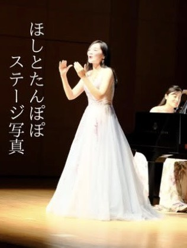
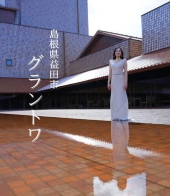

心に響く、透き通る歌声を。益田から届ける音楽の輪。
国立音楽大学を卒業後、故郷である島根県益田市を拠点に活動するソプラノ歌手・須藤静香。本格的なクラシックから、心温まる童謡・唱歌まで。その澄んだ歌声は、聴く人の心に優しく寄り添います。演奏活動のみならず、合唱指導やレッスンを通じて、地域に音楽の喜びを広げる活動にも力を注いでいます。
基本情報
ソプラノ歌手 / 音楽指導者
出身・拠点: 島根県益田市
サイトで打ち出すべき「3つの魅力」
国立音大で専門的に学んだ本格的なソプラノボイス。クラシックの格調高さだけでなく、聴き手に寄り添う柔らかな表現力が魅力です。
地元・益田市に戻り、音楽を通じて街を元気にしようとする姿勢。美術館や地域のイベントなど、生活に身近な場所で音楽を届ける「親しみやすさ」を強調します。
自分一人で歌うだけでなく、合唱指揮や個別レッスンを通じて「歌う楽しさ」を広めている点。教育者としての誠実な人柄を伝えます。
レッスン・合唱指導
初心者の方でも安心。「須藤さんに教わってみたい」と思っていただけるよう、一人ひとりの声に寄り添った丁寧な指導を行います。歌うことの楽しさと、自分自身の声の魅力を引き出しましょう。
学生から大人まで、団体でのアンサンブルの喜びを分かち合います。確かな技術に基づき、心が一つになるような音楽づくりをサポートします。
Instagram Media


演奏依頼やレッスン申し込み、その他のお問い合わせはこちらからお願いいたします。